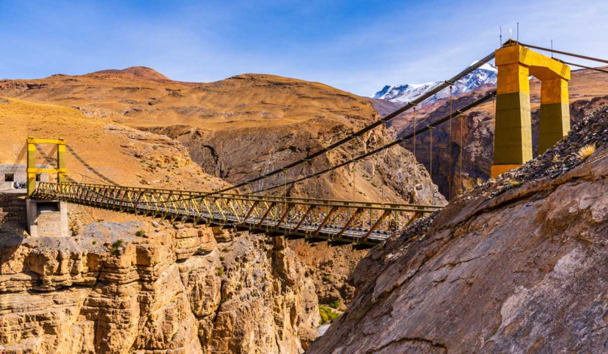

Chicham Bridge
छिछम पुल


The name Chicham Bridge derives simply from Chicham, one of the two villages it links across the Samba Lamba Nallah, a deep rivulet gorge in the Spiti Valley of Himachal Pradesh; the name of the nallah itself has no settled etymology, and local residents are generally unable to explain its origin. The structure spans the gorge to join Chicham with the neighbouring settlement of Kibber, home to the post office whose cancellation bears this image, and the crossing has long been the only practical route between the two villages, which lie close together as the crow flies but were historically separated by a near-vertical drop of roughly a thousand feet.
Chicham Bridge is popularly cited as Asia's highest suspension bridge, with its deck set at an elevation of approximately 13,596 feet (4,145 metres) above sea level, placing it among the most extreme engineering achievements in the trans-Himalayan road network. Its significance is primarily infrastructural and strategic rather than religious or ceremonial: it forms part of India's border-area road and connectivity programme in Lahaul and Spiti, a district abutting the international frontier, and it is maintained as a vital civilian link rather than a monument. Beyond its practical function, it has become one of the most photographed engineering landmarks in Spiti Valley, drawing trekkers and road travellers heading toward Kibber and the upper Spiti villages.
The bridge is a stiffened steel truss suspension structure built by India's Border Roads Organisation, with construction reported to have commenced around January 2003 and the project reaching completion only in 2017, a span of nearly fifteen years attributable to the extreme altitude, harsh winters, and logistical difficulty of moving steel and machinery into the region. The finished structure has a span of about 120 metres across the gorge, carrying a stiffened deck on steel cables anchored into the rock faces on either side, engineered to withstand high winds and heavy snow loads typical of the upper Spiti plateau. Before its completion, the only crossing available to villagers was a hand-operated pulley trolley suspended on a cable, a makeshift ropeway that residents, students, and even livestock had to use to traverse the gorge regardless of weather or season.
A specific and often-cited benefit of the bridge is the reduction it brought to road travel distances in the area: by providing a direct crossing at Chicham, the bridge is credited with shortening the route between Kibber and Losar by around 40 kilometres, a substantial saving in a region where roads must otherwise wind far around mountain contours. The earlier trolley crossing, by contrast, was recounted by locals as a frightening ordeal, particularly for children travelling to school or for the sick requiring transport to medical care, since a cable failure or a sudden storm could strand a person over the gorge for hours. The bridge's opening in 2017 is remembered locally as the moment this risk was effectively retired for the two villages.
Kibber itself, the post office associated with this cancellation, sits adjacent to the Kibber Wildlife Sanctuary, a high-altitude protected area known for snow leopard and blue sheep populations, making the Chicham crossing part of the same travel corridor used by researchers, forest department staff, and visitors headed to the sanctuary as well as by the villagers of Chicham and Kibber themselves. The bridge today remains under the maintenance mandate of the Border Roads Organisation as part of its network of strategic roads and crossings in Himachal Pradesh's border districts, and it is listed by regional tourism authorities as a recommended stop for travellers touring the Kaza-Kibber-Chicham circuit in Spiti Valley.
| Date of Introduction | March 22, 2022 |
|---|---|
| Address | Branch Postmaster, |
| Kibber BO, | |
| Lahaul and Spiti (dt.), Himachal Pradesh - 172114. |